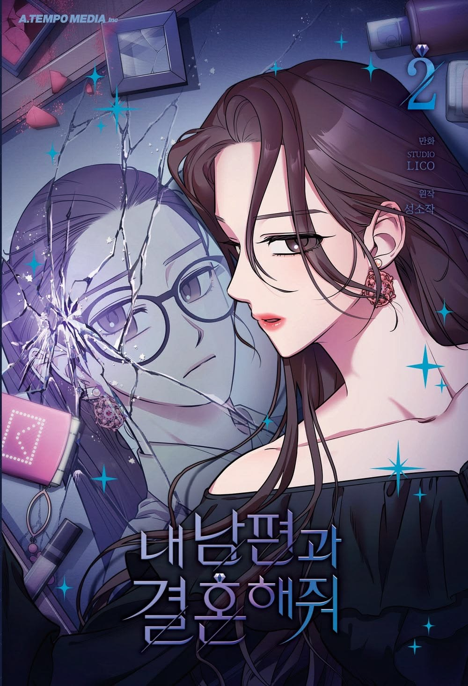

Từ một người phụ nữ bị phản bội và đẩy đến cái chết, Kang Ji-won có cơ hội quay trở lại quá khứ để thay đổi số phận. Cô đi mà lấy chồng tôi thu hút độc giả bằng công thức trả thù quen thuộc nhưng được đẩy lên cao trào nhờ những màn “lật kèo” liên tiếp.

Khi người bị phản bội được viết lại số phận
Cô đi mà lấy chồng tôi xoay quanh Kang Ji-won, một người phụ nữ dành phần lớn cuộc đời để vun vén cho gia đình nhưng cuối cùng lại nhận về sự phản bội.
Chồng cô, Park Min-hwan, ngoại tình với người bạn thân Jung Soo-min. Trong một lần phát hiện sự thật, Ji-won phải đối mặt với bi kịch khiến cuộc đời kết thúc đầy cay đắng.
Nhưng thay vì khép lại, câu chuyện đưa Ji-won trở về 10 năm trước.
Lần này, cô biết trước những gì sẽ xảy ra. Thay vì tiếp tục chịu đựng, Ji-won quyết định thay đổi tương lai và khiến những người từng phản bội mình phải trả giá.

Công thức “trọng sinh” quen thuộc nhưng dễ cuốn
Điểm hấp dẫn nhất của Cô đi mà lấy chồng tôi nằm ở cảm giác thỏa mãn khi chứng kiến nữ chính từng bước giành lại quyền kiểm soát cuộc đời.
Ji-won không còn là người phụ nữ yếu thế của quá khứ. Cô bắt đầu nhận ra những mối quan hệ độc hại, học cách từ chối những yêu cầu vô lý và quan trọng hơn, biết đặt bản thân lên trước.
Các tình huống “nghiệp quật” vì thế trở thành một trong những yếu tố khiến độc giả khó dừng lại. Mỗi lần Ji-won nhìn thấy một sự kiện từng khiến mình đau khổ và tìm cách thay đổi nó, câu chuyện lại tạo ra một vòng lặp tò mò: Liệu tương lai lần này sẽ diễn ra như thế nào?
“Đi mà lấy chồng tôi” không đơn giản là một câu nói trả thù
Ngay từ nhan đề, tác phẩm đã tạo ra một lời khiêu khích khá trực diện. Nhưng nếu chỉ xem đây là câu chuyện về một người phụ nữ giành lại chồng mình từ tay bạn thân thì sẽ bỏ qua một phần quan trọng của tác phẩm.
Thực chất, hành trình của Ji-won là quá trình cô học cách thoát khỏi những mối quan hệ khiến mình đánh mất giá trị bản thân.
Chồng cũ không phải thứ cô nhất định phải giành lại. Ngược lại, Ji-won cần tìm được một cuộc sống mà ở đó cô không còn phải phụ thuộc vào bất kỳ ai.
Đây cũng là lúc nhân vật Yoo Ji-hyuk trở thành một điểm cân bằng quan trọng. Mối quan hệ giữa Ji-won và Ji-hyuk giúp câu chuyện chuyển dần từ trả thù sang chữa lành và xây dựng lại niềm tin.

Điểm mạnh nằm ở cảm giác “đã”
Không khó để nhận ra Cô đi mà lấy chồng tôi sử dụng khá nhiều mô-típ quen thuộc của dòng manhwa báo thù: ngoại tình, bạn thân giả tạo, nhân vật phản diện ích kỷ và nữ chính quay về quá khứ.
Tuy nhiên, tác phẩm biết cách sắp xếp các tình huống để tạo cảm giác thỏa mãn cho người đọc. Những nhân vật từng khiến Ji-won tổn thương lần lượt phải đối mặt với hậu quả từ chính lựa chọn của họ.

Nhịp truyện cũng tương đối nhanh, các nút thắt được giải quyết liên tục nên tác phẩm phù hợp với độc giả thích những câu chuyện có nhiều cao trào và ít khoảng nghỉ.
Nhưng vẫn có những điểm chưa hoàn hảo
Điểm yếu của tác phẩm cũng đến từ chính công thức nói trên.
Một số nhân vật phản diện được xây dựng khá một chiều, đặc biệt khi sự ích kỷ và xấu tính của họ được nhấn mạnh liên tục. Điều này giúp câu chuyện dễ tạo cảm giác “hả hê”, nhưng đồng thời khiến tâm lý nhân vật đôi lúc thiếu chiều sâu.
Ngoài ra, việc Ji-won biết trước tương lai khiến một số tình huống trở nên dễ đoán. Khi độc giả đã quen với công thức “nữ chính biết trước – đối thủ mắc sai lầm – nữ chính phản đòn”, yếu tố bất ngờ có thể giảm dần.
Một câu chuyện về việc chọn lại chính mình
Điều khiến Cô đi mà lấy chồng tôi đáng đọc không nằm hoàn toàn ở những màn trả thù.
Điều thú vị hơn là sự thay đổi của Ji-won. Từ một người luôn cố gắng làm hài lòng người khác, cô dần hiểu rằng mình không cần phải hy sinh bản thân để giữ một cuộc hôn nhân hay một tình bạn đã trở nên độc hại.
Vì vậy, câu chuyện “lấy chồng tôi” cuối cùng lại không thực sự nói về việc giành lấy một người đàn ông.
Cô đi mà lấy chồng tôi không phải tác phẩm tiên phong của dòng truyện trọng sinh – báo thù, nhưng lại biết cách sử dụng những công thức quen thuộc để tạo ra một câu chuyện dễ cuốn. Với những độc giả thích nữ chính mạnh mẽ, drama tình cảm và cảm giác “nghiệp quật” đúng lúc, đây là một lựa chọn đáng thử.